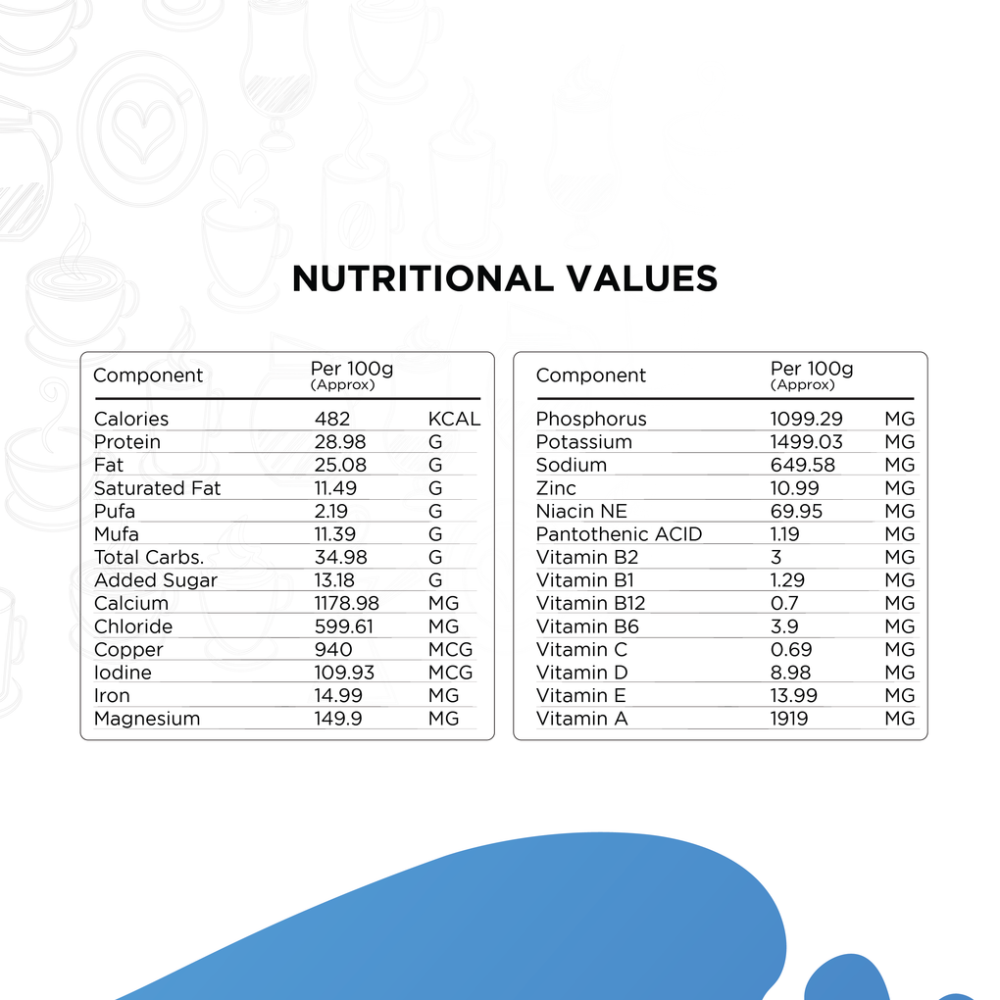
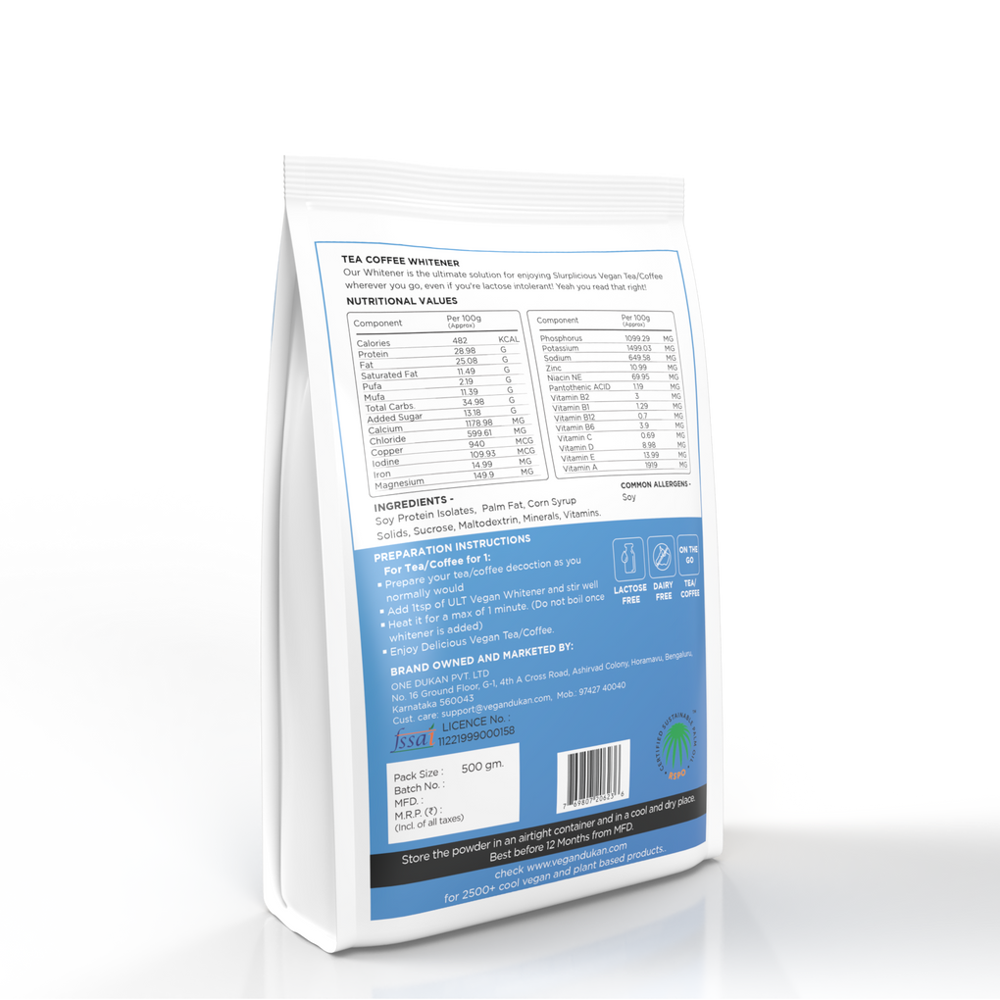

Ultx Ultimate Tea Coffee Whitener ( Milk Substitute, Vegan, Plant-based , Lactose & Dairy-free)
Our Tea/Coffee Whitener is the ultimate solution for enjoying Slurplicious Vegan Tea/Coffee wherever you go, even if you're alctose intolerant! Yeah you read that right!
Functional benefit (s):
- Dairy Free
- Lactose Free
- OTG Tea/Coffee
Ingredients: Soy protein isolate, Plam Fat, Corn Syrup, Sucrose, Maltodextrin, Minerals, Vitamins
For Coffee for 1:
- 1. Take a coffee pan and about 150 ml of water and sugar/jaggery how much you like.
- 2. Boil it
- 3. Take about 50 ml water in your coffee mug.
- 4. Add coffee powder as you like the strength and 1.5 table spoon of Ultimate Whitener. Stirr well just for 30 seconds and it will be a smooth slurrp.
- Add hot sweet water to this from a height to froth.
- All Natural Ingredients
- 6. It's ready to indulge
Shelf Life: 1 Year from MFD